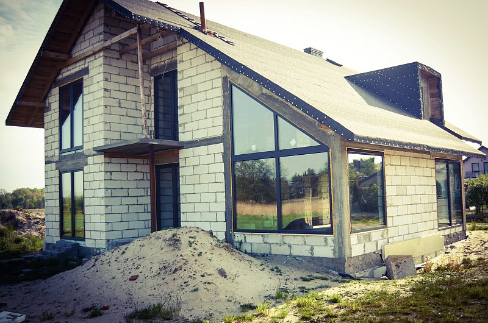
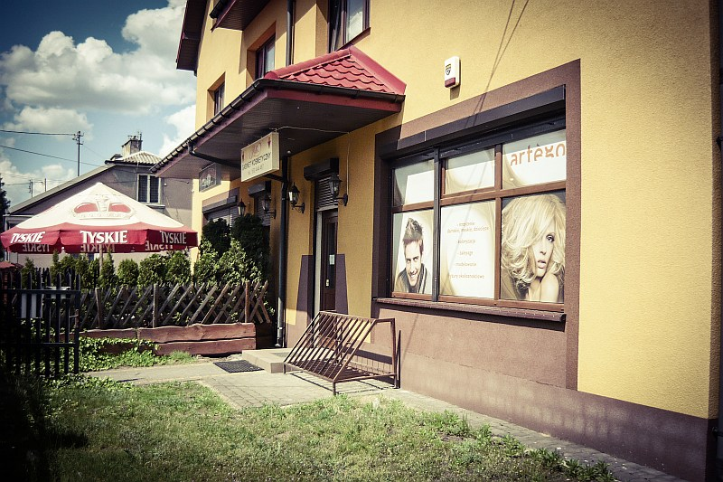

Budynek dawnej poczty w Radzyminie.
Wymiana stolarki wg zaleceń konserwatora zabytków.
Parter - witryny i drzwi konstrukcje aluminiowe.
Ip - okna drewniane.
Budynek jednorodzinny w Jasienicy.
Montaż okien PCV wykonanych na profilach VEKA 82
mm, system 7-komorowy, pakiet 3-szybowy z ciepłą ramką o współczynniku przenikania ciepła
Ug=0,5.
Okna w kolorze obustronnym Antracyt 7016.

Budynek jednorodzinny w Jasienicy.
Montaż okien PCV wykonanych na profilach VEKA 82
mm, system 7-komorowy, pakiet 3-szybowy z ciepłą ramką o współczynniku przenikania ciepła
Ug=0,5.
Okna w kolorze obustronnym Antracyt 7016.
Radzymin.
Wymiana starej witryny sklepowej i drzwi na prosty i niedrogi system 5-komorowy
PCV.

Miejscowość Łosie k. Radzymina.
Montaż bramy garażowej uchylnej ocieplonej firmy Legbud-Gargula
oraz drzwi stalowych firmy KMT.
Radzymin.
Wymiana starej stolarki okiennej na nową PCV wykonaną na profilach Schucco
82 mm, pakiet 3-szybowy z ciepłą ramką.
Okna w kolorze obustronnym Winchester.

Budynek jednorodzinny w Radzyminie.
Montaż okien PCV, system 6-kom GEALAN 74
Classic, pakiet 3-szybowy z ciepłą ramką, kolor obustronny Orzech włoski oraz drzwi stalowe
dwuskrzydłowe firmy KMT.
Budynek usługowo-mieszkalny w Radzyminie.
Wymiana w części usługowej budynku
starych witryn i drzwi wejściowych na nowe PCV system VEKA i GEALAN.


Budynek jednorodzinny w Radzyminie.
Montaż okien PCV system Schucco SI82 Classic.
Montaż drzwi stalowych firmy KMT.
Budynek jednorodzinny w Markach.
Okna na profilu Schuco 70 mm, pakiet 3-szybowy
0,7.
Budynek jednorodzinny w Wieliszewie.
Okna na profilu VEKA 82 mm, kolor obustronny
Antracyt 7016, ciepły montaż.
Brama garażowa segmentowa z napędem firmy Wiśniowski,
kolor Antracyt 7016.
Budynek jednorodzinny w miejscowości Stary Kraszew.
Okna na profilu VEKA 82 mm, system
7-komorowy, kolor obustronny Złoty dąb, ciepły montaż.
Budynek jednorodzinny w miejscowości Trojany.
Okna na profilu VEKA 82 mm, kolor zewn.
Orzech.
Budynek mieszkalny w Kraszewie Starym przed i po wykonaniu elewacji.
Okna na profilu
GEALAN 74 mm, system 6 komorowy, pakiet 3 szybowy, kolor zewnętrzny Orzech, od wewnątrz
białe.
Budynek mieszkalny w miejscowości Stare Załubice.
Okna na profilu VEKA - Softline 82 mm, system 7 komorowy, pakiet 3 szybowy, kolor okleiny obustronny Orzech. Wykonany tzw. "ciepły montaż" przy użyciu specjalnych taśm.

Budynek mieszkalny w Radzyminie przy ul POW.
Okna na profilu VEKA - Softline 82 mm, system 7 komorowy, pakiet 3 szybowy o współczynniku przenikania U=0,5 w standardzie z ciepłą ramką dystansową, kolor obustronny Złoty dąb, korpus barwiony w masie na kolor karmelowy, 3 uszczelki z wysokiej jakości tworzywa skutecznie izolujące hałas, zimno i wilgoć.
Ze względu na specyfikę muru, od zewnątrz z cegły klinkierowej użyto do montażu specjalnych taśm rozprężających Zamontowano również parapety zewnętrzne w okleinie Złoty dąb.